Minimum Vertex Cover via Max Flow | SAM I AM (UVA 11419)
Lecture - 50
Minimum Vertex Cover via Max Flow | SAM I AM (UVA 11419)
(Refer Slide Time: 0:11)

Welcome to the third and the final module in week 9 of Getting Started with Competitive Programming. So, we have been talking about network flows all along. And this week, the emphasis has been on the minimum cut problem, which by now we have learned is essentially the same as the maximum flow in terms of its value. And we also know how to use our Max Flow algorithm to actually find a minimum cut. So, now we are going to put all of this to some good use on a particular problem that does not directly ask for a minimum cut.
But it asks for a different quantity, which it turns out can be found quite nicely with the help of a minimum cut. So, let us take a look at this problem called SAM I AM, which is on the UVA platform. And there is a bit of a story and a background which I am going to kind of skip, but I will tell you what is going on in some sort of averaged form. If you want a little more background on the fictional part of it, then please take a look at the link in the description of this video.
(Refer Slide Time: 1:12)
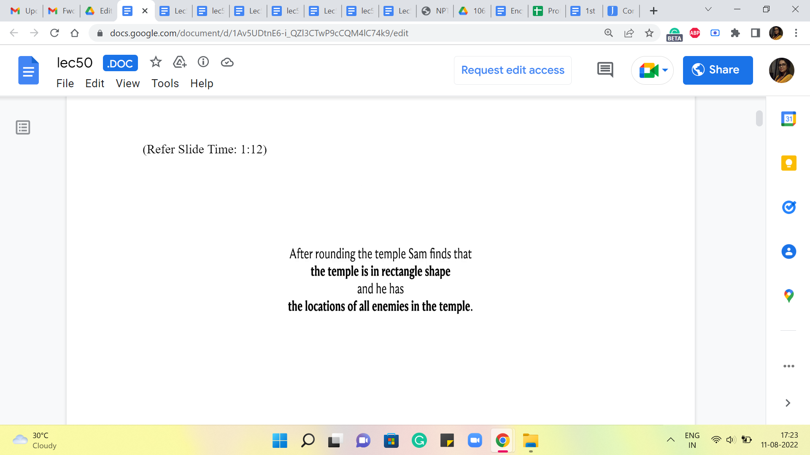 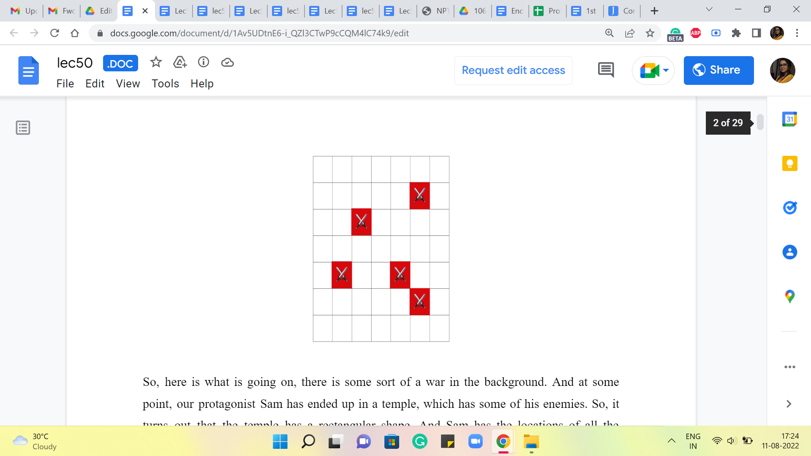
So, here is what is going on, there is some sort of war in the background. And at some point, our protagonist Sam has ended up in a temple, which has some of his enemies. So, it turns out that the temple has a rectangular shape. And Sam has the locations of all the enemies in the temple. It may sound like this is something to do with coordinate geometry because we are given a rectangular region and maybe the locations are points.
But it turns out and this is something that you will discover, if you take a closer look at the problem statement, that the situation is a lot more discrete. So, by this rectangle shape, what is meant is a grid. And by locations, we are simply given information about some specific cells in this grid. So, every cell is specified by a row number and a column number that pins down the address of that cell if you like.
And we are given the addresses of all the cells in which we have enemies waiting for us. So, what are we going to do about these enemies? You might be thinking that this is going to involve going into the temple, and finding some sort of an optimal sequence to fight everybody off, and so on.
(Refer Slide Time: 2:23)


But it turns out that our friend, Sam, realizes that he can kill all of these enemies without even entering the temple by using some special weaponry that he has access to. So, it turns out that he can attack the temple from the outside. And this machinery is going to essentially release a cannonball, which will be able to destroy everything that is on a single row or a single column of this grid in one shot. So, let us take a look at how this might work for our example from before.
(Refer Slide Time: 2:53)
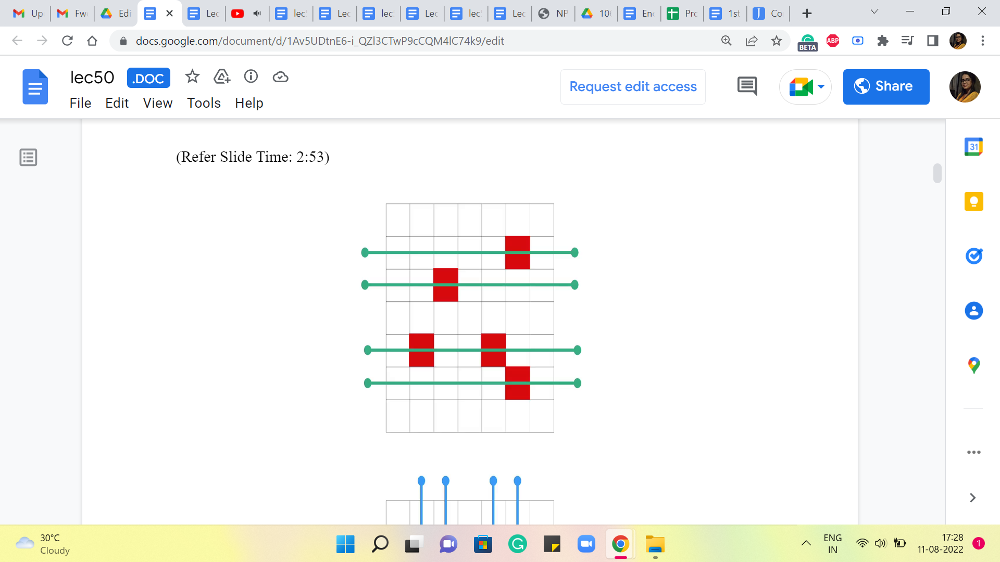 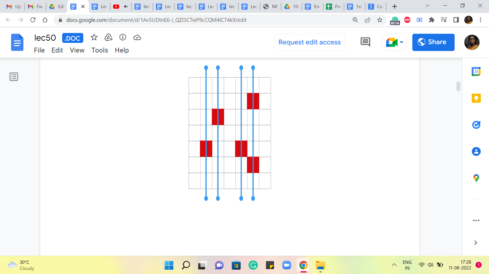 
So, you could shoot cannonballs through rows 2, 3, 5, and 6. And this would take care of all the enemy locations. Or you could shoot cannonballs through columns 2, 3, 5, and 6. And this would again, take care of all the enemy locations. Think about if there is a way that you can use a smaller number of cannonballs in total, and still take care of all the enemies. Remember that you are not obliged to only attack just the rows, or just the columns, as we have been doing here, you could mix them up, just see if you can find a more optimal solution in the sense of using fewer cannonballs.
Alright. Hopefully, you had a chance to think about that. And it turns out that if you indeed combine the row and the column forces and take advantage of them simultaneously, then you can get away with just using 3 cannonballs. And this is one of the ways that you can do it. And perhaps you can come up with other ways of doing this as well. Now, think about whether you can do with fewer than 3 cannon balls. Is it possible to push this even further? Feel free to pause the video here at this point and think about this for a moment.
(Refer Slide Time: 4:10)

Alright. So, you might discover that there are these three enemy locations here that happen to not share a row or a column. Meaning that any two of these locations are on different rows as well as on different columns. Because there are three such locations, notice that you are going to need 3 distinct cannon balls to take care of these 3 locations because there is no cannonball that will be able to hit two of these locations at once, simply because they are neither share a row nor share a column.
So, this solution that we just had with three cannonballs is the best that you can hope for in terms of minimizing the number of cannonballs, which turns out to be the optimization objective that is handed out to us.
(Refer Slide Time: 4:52)
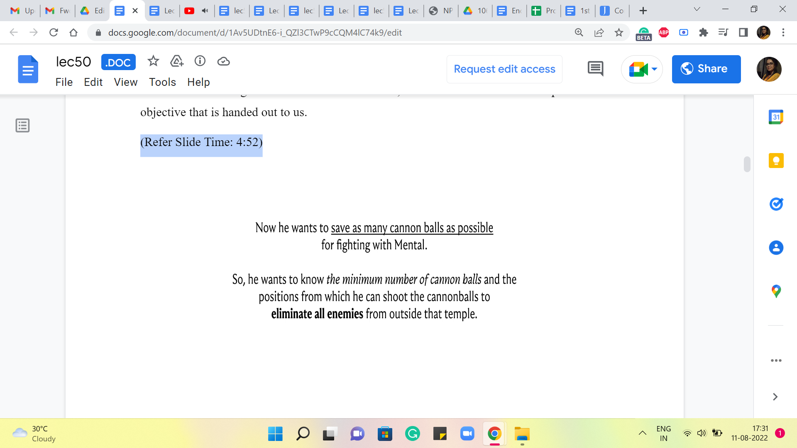
So, the task in this problem is to come up with a solution that uses as few cannonballs as possible to eliminate all the enemies that are in the temple. So, that is the problem statement. And I hope that at this point, all the details, at least about the question, are clear. You might guess that we want to solve this by setting up some sort of a flow network that encodes all the information that is there in this problem.
And hopefully, either a flow or a cut in this network will give us what we want. So, feel free to take a pause here and walk up and down a little bit and think about what would be a natural graph to associate with all the information that you have here. Now, our modeling of this problem as a flow network is going to set up the foundation for the success of the rest of the solution. It is also the part of the solution that I think requires the most imagination.
So, once somebody gives you the flow network, you might be wondering: How do you expect me to come up with something like this? So, that is a fairly natural question. And the best answer that I have at this point is to just practice a lot of these problems. Right. And you can find some more in the extras section of the course website. So, I definitely encourage you to take a look at that. And think about how the modeling will work.
Unfortunately, there is no formulaic approach to this. So, you just get better at it with experience. The more examples you see, the more intuitive the process becomes. And over time, you will just get quicker at the process. And it is also perfectly fine to stumble around a bit and do work with a few ideas that do not work at first, and you keep needing to sort of nudge them and morph them into something that eventually works. It is all a part of the process, really.
So, once again, if you want to take this up as a bit of a challenge, you want to pause the video here and think about what would be a way to model the information in this problem as a graph. And when you are ready, just come back so we can exchange notes. Alright. So, at this point, I am going to introduce you to the flow network that we are going to build based on the information that we have about enemy locations in the grid.
(Refer Slide Time: 6:58)
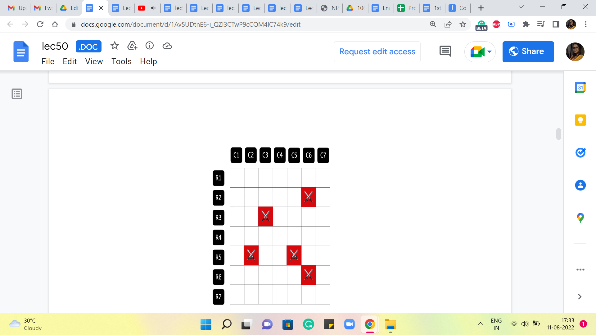 
So, what I am going to do, to begin with, is I am going to introduce vertices corresponding to the rows and the columns of the grid. Okay. So, in this example, we have 7 rows and 7 columns. So, that corresponds to 7-row vertices and 7-column vertices. And that is what I will continue to call them throughout this discussion.
Now, how do I want to introduce the edges? I would say this is pretty natural. I want the edges to capture information about the locations of where the enemies are. So, in particular, we are going to add an edge between the vertex that represents the ith row and the vertex that represents the jth column, if and only if there is an enemy at the location given by the intersection of the ith row and the jth column. So, just to be clear about this, let us play this out in this example by looping through all the enemy locations given to us.
(Refer Slide Time: 7:46)
 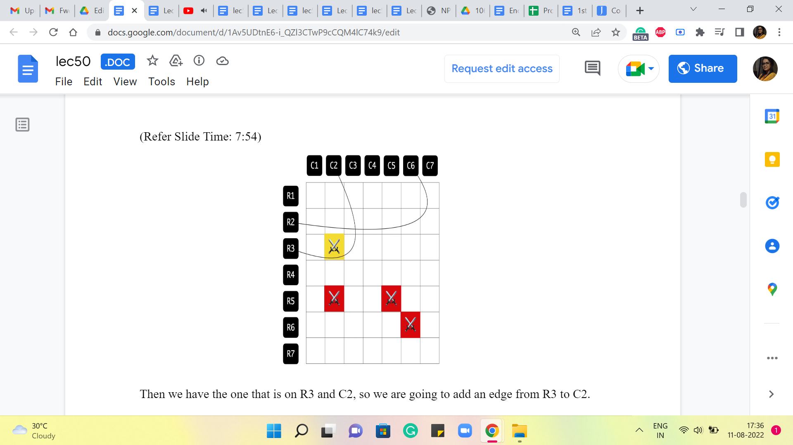 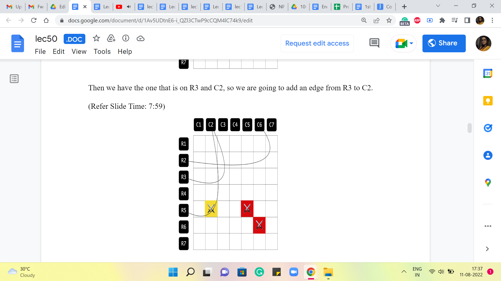
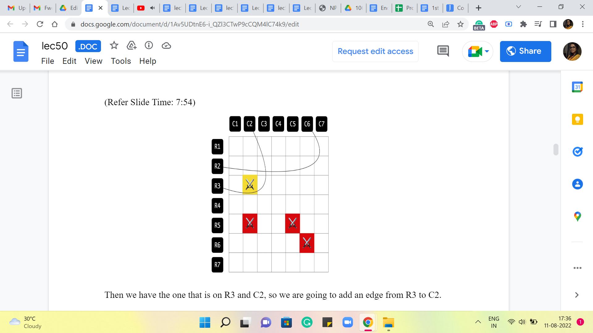 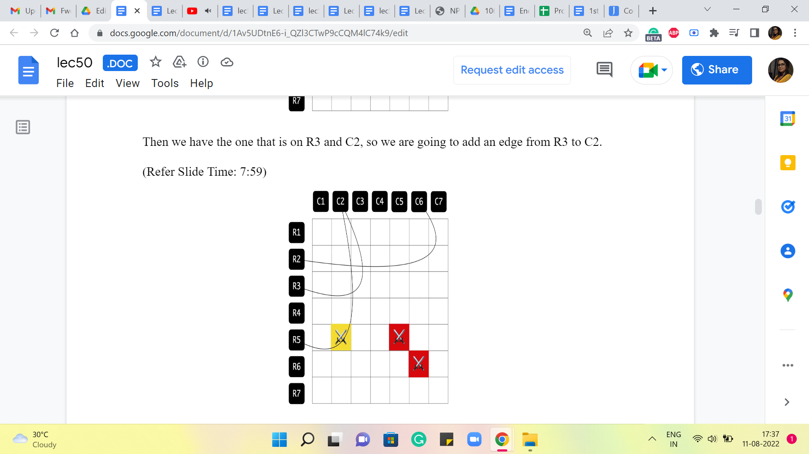
 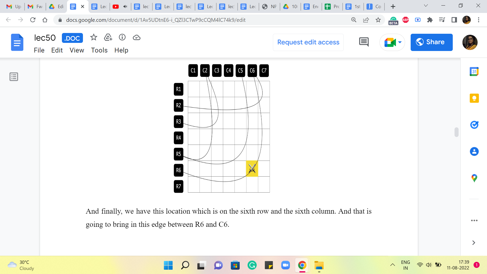
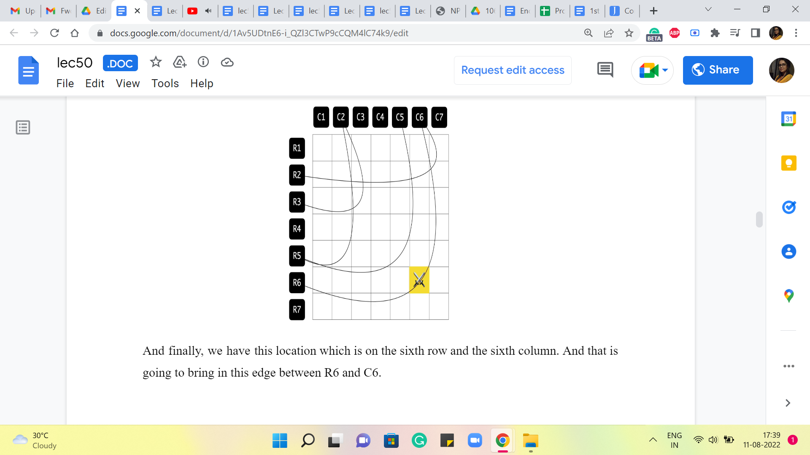 
So, let us look at the one that is on the second row in the sixth column. To remember this location, I am going to add an edge between R2 and C6. Then we have the one that is on R3 and C2, so we are going to add an edge from R3 to C2. Then we have this one here, that is again on C2 and a row 5. So, we are going to add this edge between R5 and C2.
And again, we have another location on the fifth row, this time on the fifth column. And that is again going to be remembered by adding this edge between R5 and C5. And finally, we have this location which is on the sixth row and the sixth column. And that is going to bring in this edge between R6 and C6. So, that is essentially the graph that we construct. And at this point, we can completely forget about the grid. This graph essentially captures or encodes all the information that we have about the enemy locations. So, this is the graph that we will be working with.
(Refer Slide Time: 8:37 and 8:41)
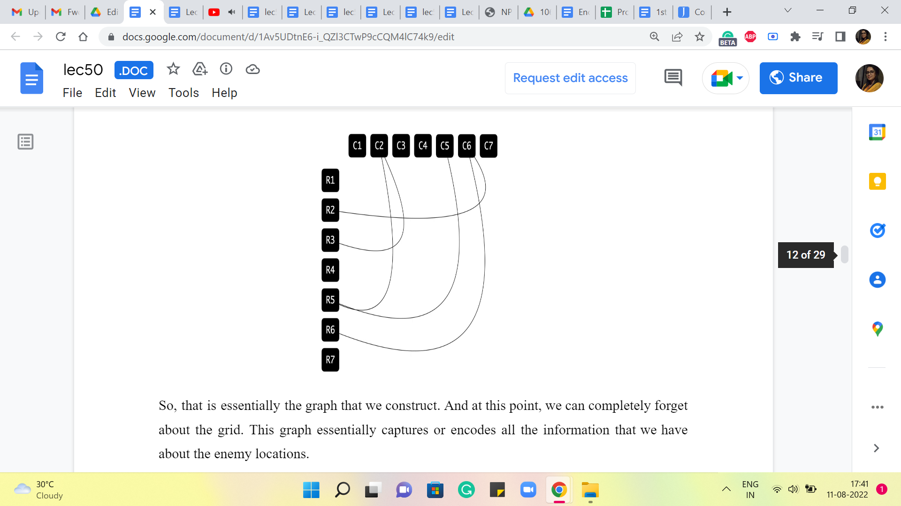 

Again, just to recap, this is how we constructed the graph. The graph had a vertex for every row and a vertex for every column. And we dropped edges between row-column pairs whenever the corresponding locations had enemies between them. Now, let us also think about what we should be looking for in this graph. Remember, we are trying to fire the smallest number of cannonballs that takes care of all the enemies.
The cannonballs can be fired either on a row or on a column. So, naturally, cannonballs correspond to vertices. They correspond to the rows and the columns on which the shots are going to be fired. But now, what do we want to achieve by firing these cannonballs? We want to be able to knock out all the enemy locations. These enemy locations have been modeled as edges.
(Refer Slide Time: 9:32 and 9:56)


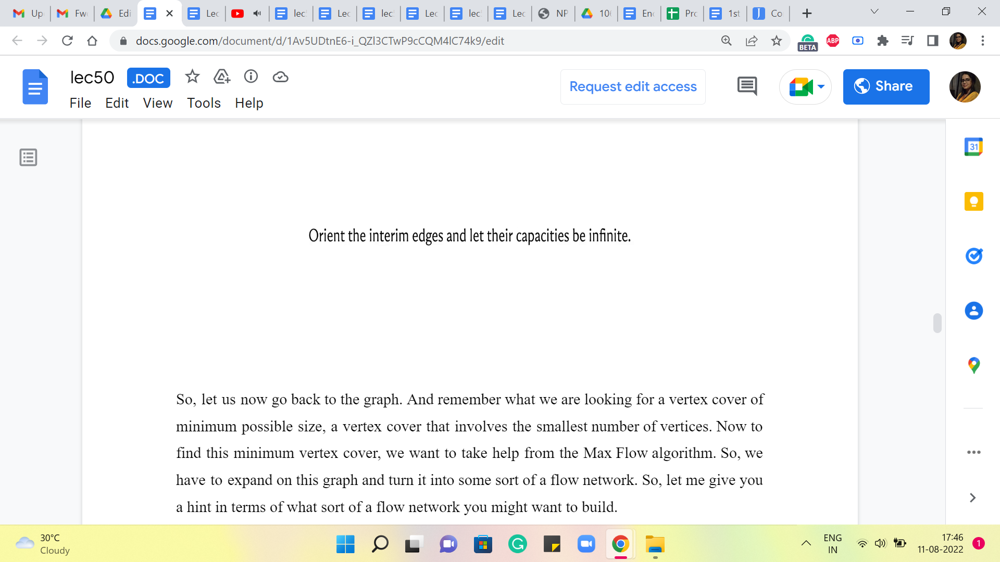
So, essentially, what we are looking for is a subset of vertices that is incident on all the edges in our graph, which is to say that if we remove these vertices, then all the edges would go with them. Okay. So that is what we are looking for. In graph theory parlance, such a subset of vertices is called a vertex cover. So, I might use that phrase now and then to refer to our solution.
Alright. So, let us now go back to the graph. And remember, what we are looking for is a vertex cover of the minimum possible size. A vertex cover that involves the smallest number of vertices. Now to find this minimum vertex cover, we want to take help from the Max Flow algorithm. So, we have to expand on this graph and turn it into some sort of a flow network. So, let me give you a hint in terms of what sort of a flow network you might want to build.
Remember that you have already seen how we can use flows to find maximum matchings. Why am I bringing up matchings? Well, remember what we said earlier about a lower bound on the number of cannonballs that we need to fire. We said that if you have a collection of enemy locations that share no common row or a common column, then all of these locations require their own cannonball to be fired to take care of them. Right.
That is how we said that the solution with three cannonballs was optimal for the example that we were looking at earlier. So, what does this sort of a collection of enemy locations that have no rows or columns in common correspond to in this graph? Take a minute here and think about this. I have already hinted at what it might be. But still, Pause the video here and come back when you have had a chance to think through this.
Alright. If you have a collection of enemy locations, which have no column or no row in common, then that corresponds to a subset of edges that do not share any vertices. But this is precisely our notion of a maximum matching. Right. So, it is at least a notion of a matching. And if you wanted the best possible lower bound on your solution, you would want to find a maximum matching because that gives you the most information. It tells you well, you are definitely going to need at least so many cannonballs.
So, let us try and borrow from what we have seen before and build the kind of network that we would have built if we were looking for a maximum matching in this graph. So, remember, the way we did that was to introduce a source vertex that was adjacent to all the vertices on one side of this graph. And we also added our target vertex. And we said everybody on the other side was going to be adjacent to the target vertex. So, I did not say this explicitly, but it should be visually evident that we are working here with a bipartite graph.
And all the edges, of course, have one endpoint in the row vertices and the other endpoint in the column vertices. So, it is pretty natural to set up this flow network. And we could start off by saying that all of the edges (that are) incident to the source and the target vertices have unit capacity. This was crucial to ensuring that what comes out of the flow corresponds to a matching. When we model the matching problem, we also said that all the edges that go in between have unit capacity as well because that did not make a difference.
But it turns out that because it does not make a difference, it is going to be more convenient for us to think of the interim edges as not having any capacity constraints at all. And we will see why this makes our lives easier a bit later. So, what we are going to do with the edges that are in between is that, as before, we will orient them from left to right, which is to say that all the edges are sourced on the row side and have their target on the column side.
In this case, by target, I just mean where the edges end. So the direction is that they are pointing from rows to the columns. So, we will orient them like that. But we will say that these edges all have infinite capacity. Now, let us think about what a flow looks like in this network.
(Refer Slide Time: 13:36 and 14:29)
 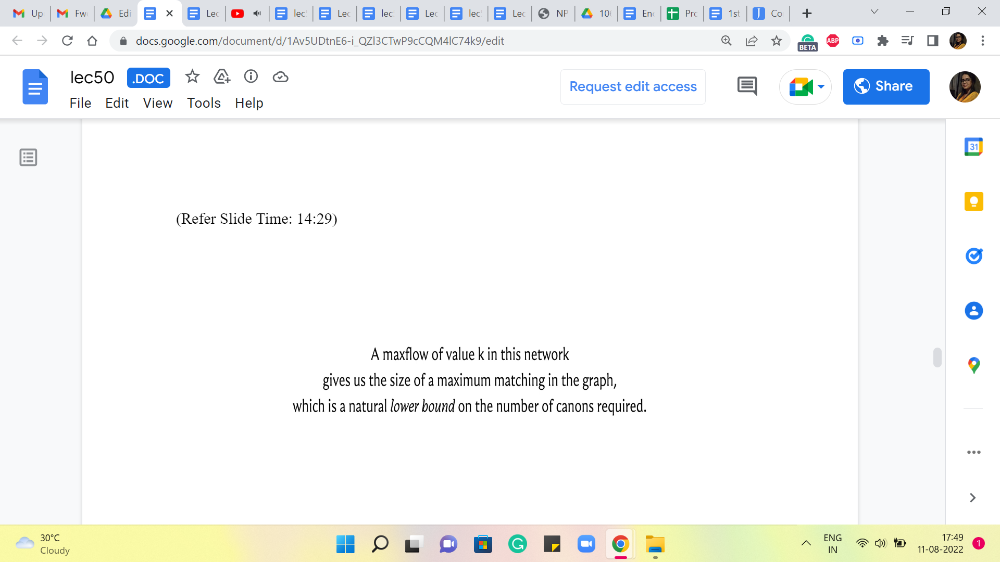
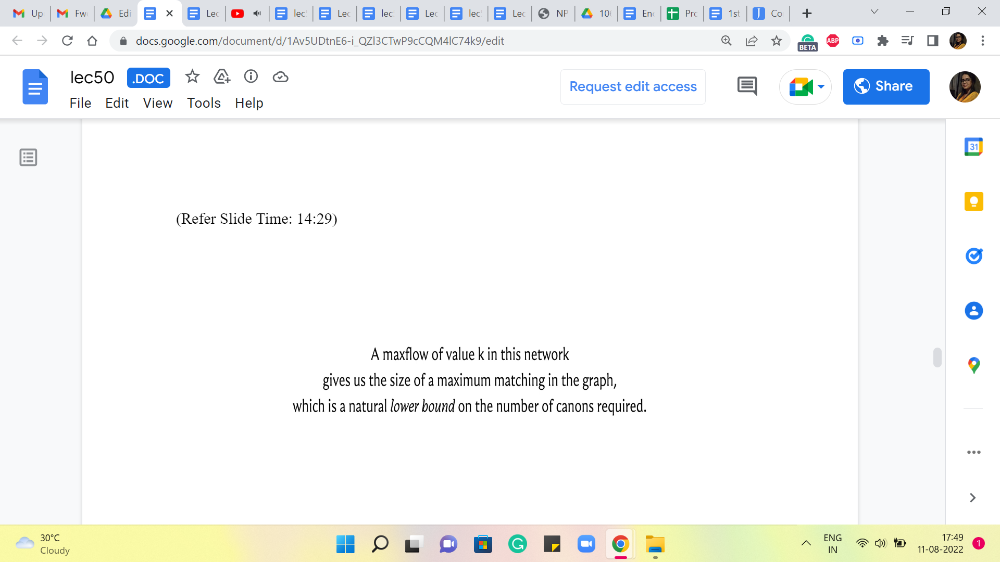
So, any flow and in particular, a maximum flow will end up picking out a matching from the middle of this network. Okay. So, if you look at all of the edges that go from the rows to the columns that have some flow going through them, this will still be a matching. And this is something that you can verify by just realizing that the capacities of the edges from the source, and the capacities of the edges incident on the target, all have unit capacity.
So, it is not possible for these edges to really have a degree more than one on either side. Remember that we are still working with flows that are integral. And that is something that you should find useful as well if you want to argue this a little more formally. Alright. So, we have a flow that identifies a matching for us. And in particular, a maximum flow will identify a maximum matching.
So, the value of the maximum flow automatically gives us a lower bound on the number of cannons that we need. So, we know that we are going to need so many cannons for sure because these edges will correspond to enemy locations that do not have any rows or columns in common. So this is a useful starting point, but it is not the solution that we are looking for.
If you go back and look at the problem statement, you are not only asked to identify the smallest number of cannonballs that you need (but) you are also asked to identify the specific rows and columns that you should target to get rid of all the enemies. So, we still have some way to go. But just as a teaser for what is coming up, let me tell you that this size of the maximum matching here, or the value of the Max Flow, is not just a lower bound on the answer. It is not just an indication of how much you need, it turns out that it is the answer.
(Refer Slide Time: 15:20 and 15:55)
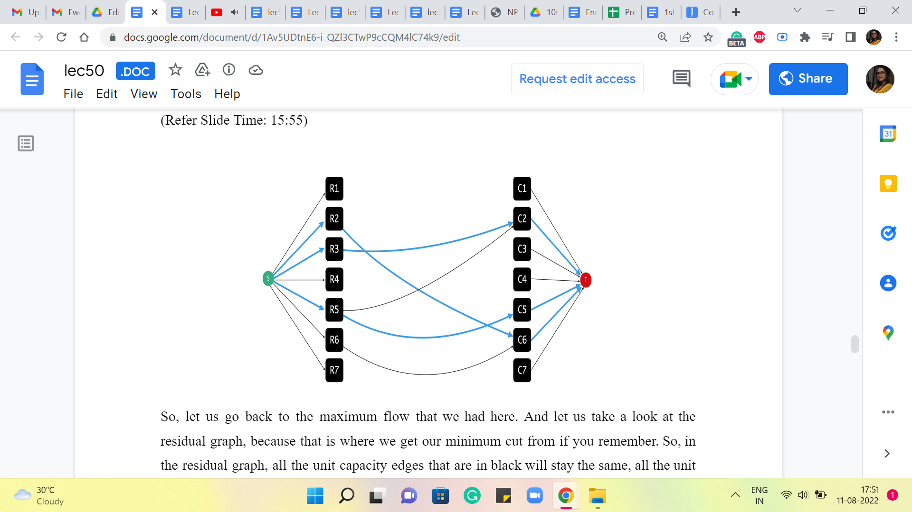
Not only do you need at least so many, (but) it is also true that you can manage with so many. So, what we are going to do is use the maximum flow, but actually, more directly, we are going to use the minimum cut associated with this maximum flow to identify a certain number of rows and columns that we need to target. And it will turn out that this number exactly matches with the lower bound. And in fact therefore, that is an easy proof that what we have is, in fact, optimal. So, let us get started with trying to figure out how we can do this.
So, let us go back to the maximum flow that we had here. And let us take a look at the residual graph because that is where we get our minimum cut from, if you remember. So, in the residual graph, all the unit capacity edges that are in black will stay the same. All the unit capacity edges that are blue will get reversed. And all the infinite capacity edges that are in blue will, well they will become bi-directional edges because the forward edges will remain with an infinite residual capacity, but you will get some back edges, which have unit capacity. And all the black edges that have infinite capacity will just stay as black edges with infinite residual capacity.
(Refer Slide Time: 16:34)
 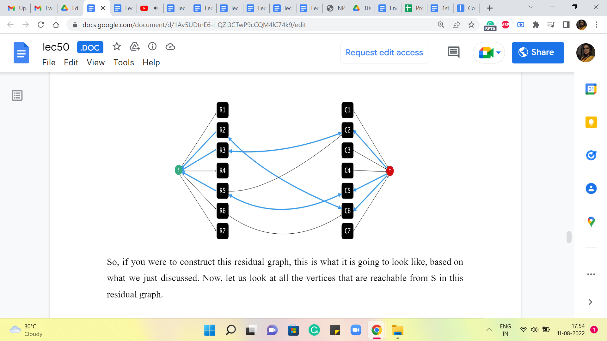
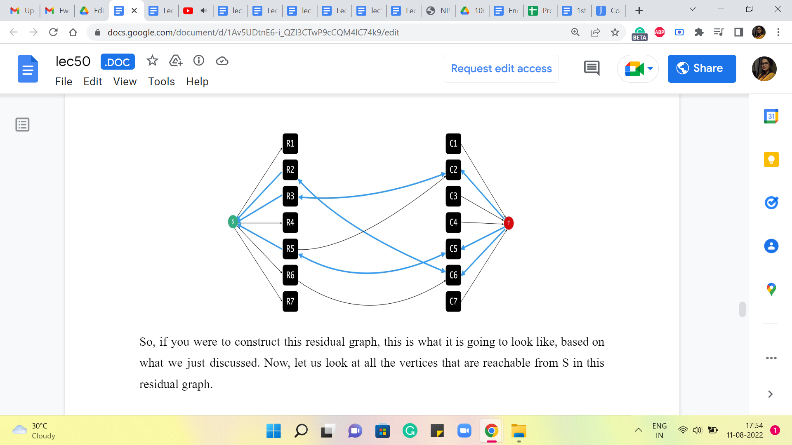
So, if you were to construct this residual graph, this is what it is going to look like, based on what we just discussed. Now, let us look at all the vertices that are reachable from S in this residual graph.
(Refer Slide Time: 16:47)


We want to remember that what we are looking at is going to also be a minimum cut back in the original flow network. So, here is what the reachable set of S looks like in the residual graph. So, all of the vertices reachable from S have been marked green, and everything else has been marked red. You can pause the video here and confirm that this is, in fact, what you would obtain if you were to run, let us say a BFS starting from S.
In fact, in the very first step, you will catch hold of, say, R1, R6, and R7, and even R4, but you get R2 because there is going to be a path via, I believe, C6, which is reachable from R6. So, you are going to take the path from R6 to C6, and to R2. And essentially, after that you get stuck. So, this is all the vertices that are reachable from the source.
Now, if you look at this and just think about whether there is something interesting going on here, then what is it that strikes you? Just take a moment here and see if there is anything that occurs to you as being a little bit unusual or interesting about what has just happened in this cut. Alright. So, I am going to think of the row vertices as being S loyalists and the column vertices as being the T loyalists.
So, the row vertices were in the original network very close to the source, and the column vertices were very close to the target. And it looks like after we run the MaxFlow and we obtained this cut, it looks like some of these vertices have changed parties. So, now there are these two-row vertices that are accessible, or from where you can go to the target vertex. And there is this column vertex, which is accessible from the source vertex.
(Refer Slide Time: 18:34 and 19:05)


So, in some sense, some row vertices have gone away from S, and some column burgesses have joined S. And in some sense, you can think of them as having broken ties with T. Of course, I should emphasize that none of this language is formal or meaningful, as the formal definition would go. But hopefully, it gives you a picture of something that has happened, some upsets that have taken place that will hopefully give you some intuition for what is to come.
So, let us call these vertices the misfits, and let us highlight them here. So, remember, the row vertices are the ones that do not belong to S, the ones that have been highlighted, and the highlighted column vertices do belong to S. It is just not their natural state. But that is where we are.
(Refer Slide Time: 19:24 and 19:35)
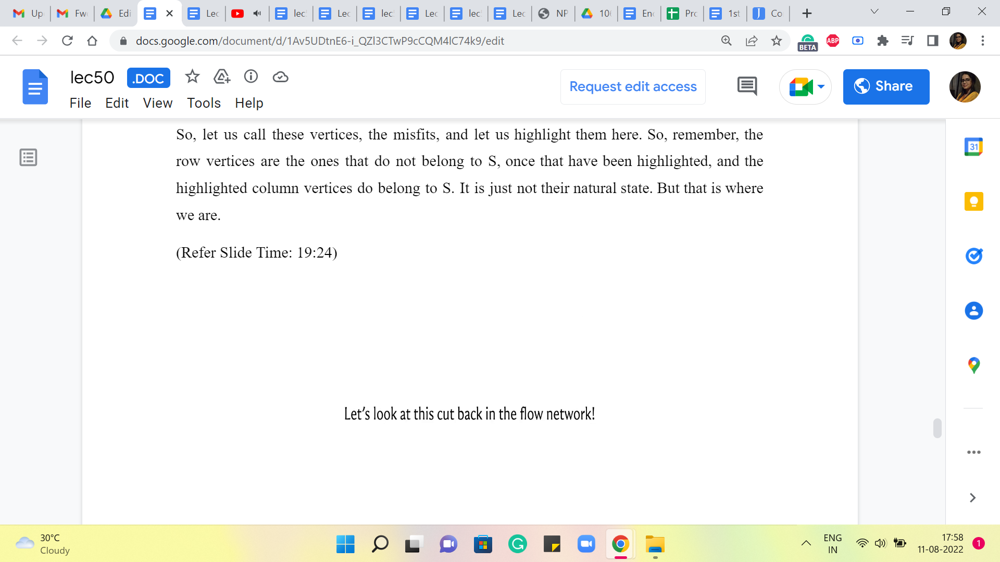 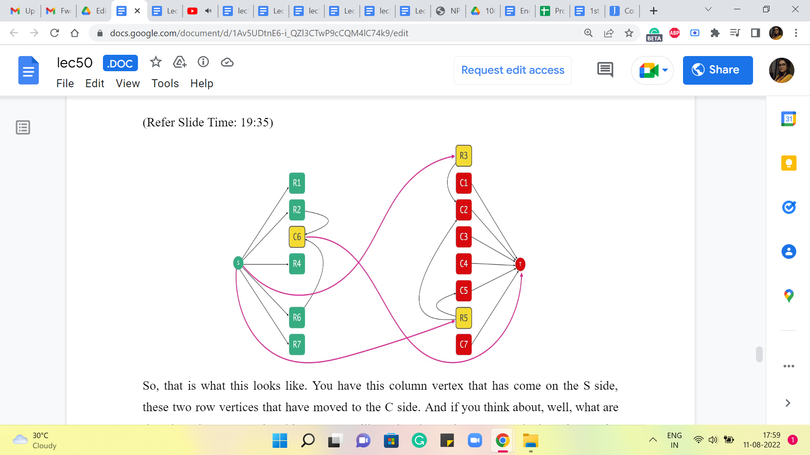
Now, let us go ahead and take a look at what this cut looks like back in the original flow network. So, I am going to move things around. And instead of having the edges from the residual graph, you are now going to have the original edges of the flow network.
So, that is what this looks like. You have this column vertex that has come on the S side, these two-row vertices that have moved to the C side. And if you think about, well, what are the edges that are crossing this cut? You will see that these edges are exactly the unit capacity edges that are either incident on S or incident to T.
(Refer Slide Time: 19:54 and 20:10)
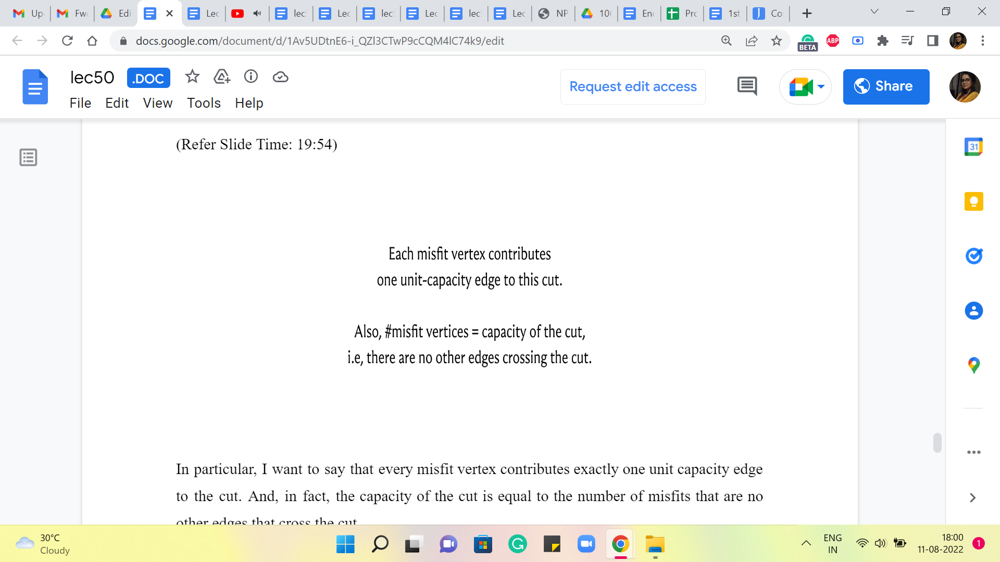 
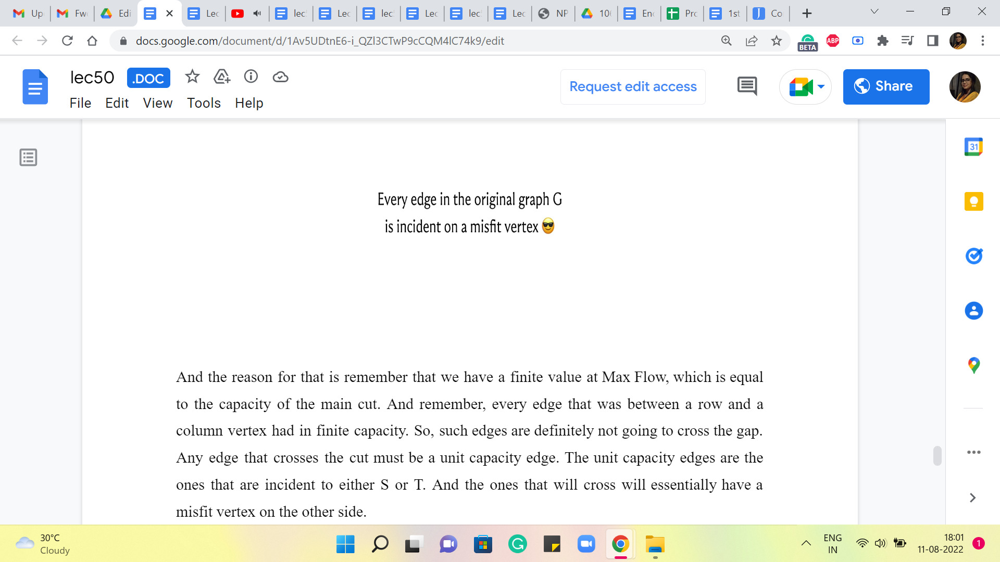
In particular, I want to say that every misfit vertex contributes exactly one unit capacity edge to the cut. And, in fact, the capacity of the cut is equal to the number of misfits. There are no other edges that cross the cut.
And the reason for that is, remember that we have a finite value at Max Flow, which is equal to the capacity of the min cut. And remember, every edge that was between a row and a column vertex had infinite capacity. So, such edges are definitely not going to cross the cut. Any edge that crosses the cut must be a unit capacity edge. The unit capacity edges are the ones that are incident to either S or T, and the ones that will cross will essentially have a misfit vertex on the other side. Right.
So, in particular, if you look at all the unit capacity edges incident on S, they were the row vertices. And if this edge is crossing the cut, then that is a row vertex that is gone over to the column side. Similarly, if you look at any unit capacity and incident on T, well, that was an edge that started off with a column vertex.
And if this vertex is crossing the cut, then it must have moved over and joined the row side, which again, makes it a misfit vertex. So, hopefully, by staring at this example and thinking about some of the things we have said, you can convince yourself that these misfit vertices are exactly as many as the capacity of this cut. And therefore, in fact, the number of them is equal to the size of a maximum matching because that was equal to the value of the maximum flow.
So, in fact, at this point, the number of misfit vertices that we have, is equal to the lower bound that we have on our solution. So, would it not be really cool if the misfits formed a solution? Because then we would be done. And you can probably already sense it from this example. But the fascinating thing is that this is actually always true. The set of misfits actually forms a vertex cover in the original graph.
So, every edge in G is incident on a misfit vertex. Let us think about why this is true. How can an edge not be incident on a misfit vertex? Remember, every edge in our graph G that we care about is an edge that goes between a row vertex and a column vertex. Remember that because we are looking at a finite capacity cut, this edge cannot be crossing the cut. So, it is either completely contained on the left side, or it is completely contained on the right side, and it goes between a row and a column.
So, if you are on the left, and you add an edge that is between a row and a column, then the column side is a misfit vertex. If you are on the right, and you are an edge between a row and a column, then the row side is a misfit vertex. So, you can think about all the cases involved here. But hopefully, what I have said essentially captures everything that you need to consider.
So, the point here is that the set of misfits actually end up killing all the edges that you have, and it is exactly what you are looking for. So, the set of misfit vertices gives you the locations or the indices of the rows and the columns from which it is useful for you to fire cannonballs so that you can get rid of all the enemies in the grid.
(Refer Slide Time: 23:10)


So, that is pretty much it, the misfits are the answer. And we just need to write some code to identify all the misfits. And we are going to get to that in a moment. But just to summarize how we came here, we said that the misfits are as many as the capacity of the minimum cut. By the max flow min cut duality, we know that the capacity of this minimum cut is equal to the value of the maximum flow.
And because of our previous discussions, we also know that the value of the maximum flow is the same as the size of a maximum matching in this graph, which we know is a lower bound on the number of cannons. So, that is why we have found not only some solution but, in fact, a solution that is guaranteed to be optimal. I think this is very cool.
And as I said, this is true in general, that in a bipartite graph, the size of a minimum vertex cover is equal to the size of a maximum matching. This may not hold in general. You can come up with examples of graphs; for example, a triangle would do. The size of a maximum match in a triangle is 1, but a minimum vertex cover needs two vertices. So, even though this may not be true in general, and that is something you should be careful about. It is a beautiful duality theorem that holds in the context of bipartite graphs.
And if you want to look it up a little bit more, this often goes by the name of Konig’s theorem. And what we have seen effectively amounts to a proof of Konig’s theorem, based on the duality of the values of the maximum flow and the minimum cut in a flow network. I should say that this is typically not the traditional or the default proof that you will see of this theorem.
And it turns out that this is one of those theorems that have many different proofs and many different approaches and different consequences. So, there is a lot to learn. If you are interested in something like this, please do check out the description of the video or the course website for more pointers. So, having discovered this structural duality, we still have a little bit of work left to do, which is to implement this in code. But knowing what we know by now, the implementation part is super easy once again. So, let us take a quick look.
(Refer Slide Time: 25:18)
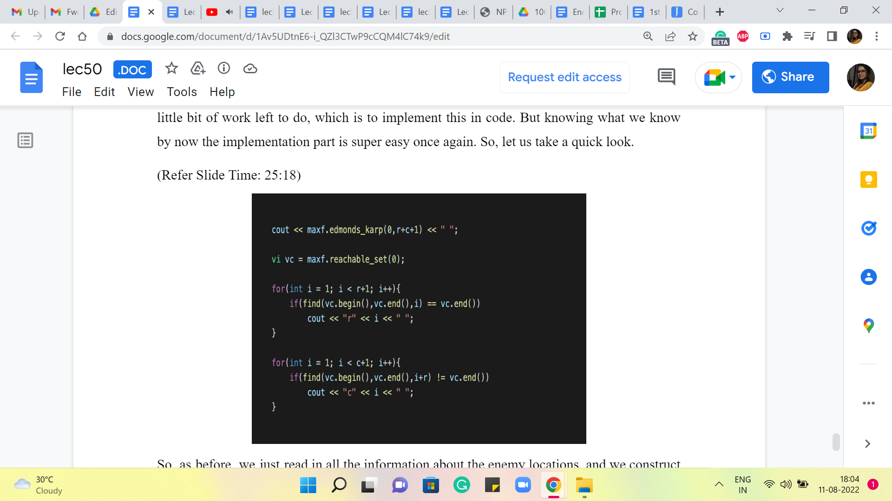
So, as before, we just read in all the information about the enemy locations, and we construct the appropriate graph. So, the construction of the graph is actually very similar to the construction that you have already seen for the maximum matching problem from last week. Nevertheless, if you want to take a look, as always, you can find the full code in the official repository for the course.
So, please take a look if you want to refer to the part of it where we take in the input and build up the flow network. But once you have done that, you just run the maximum flow algorithm. And just like we did with the minimum cut problem in the previous module, we identify the reachable set, this is the set of all vertices that you can reach from the source vertex.
And now remember, we want to identify the misfits. So, we want to look at all the vertices that are reachable from S, which are column vertices, and we want to find out all the vertices that are not reachable from S and which are row vertices. Right. So, this is what we are doing here we are going through all the row vertices. And if a row vertex is not reachable from S, that is what the first ‘if’ condition does.
So, it is a row vertex that is not reachable from S. Then that is a misfit vertex. And that is what we are going to output. And similarly, we go over all the column vertices. And if a column vertex is reachable from S, and that is the second ‘if’ condition, then that is a misfit as well. And that is what we are going to report as the output. So, at this point, we have listed all the rows and columns that we need to attack to get rid of all the enemies. And because of all the discussion we have had so far, we know that this answer is. in fact, optimal.
So, I hope you enjoyed this, I think this was an elegant problem to think about. And the discovery about the minimum vertex cover being equal to the maximum matching in a bipartite graph, I think is a cool thing to know. And this is not something that you now have to come up with by yourself in a contest situation, now that you already know it. Hopefully, this is information that you can leverage for future problems in future contests. So good luck with that.
And with this, we come to the end of our exploration of graph-based problems in this course, and I hope that you enjoyed this as much as I did. Please keep the conversation going either in the comments in this video or over the mailing list or the Discord community, especially if you are watching this during a live run of the course. For the last three weeks, we will be talking about dynamic programming, and I hope to see you back then. Thank you so much for watching, and bye for now!